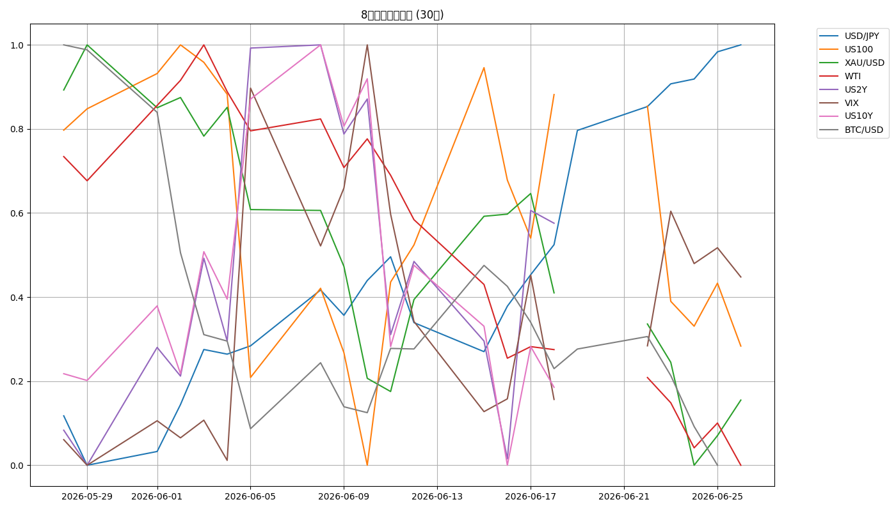
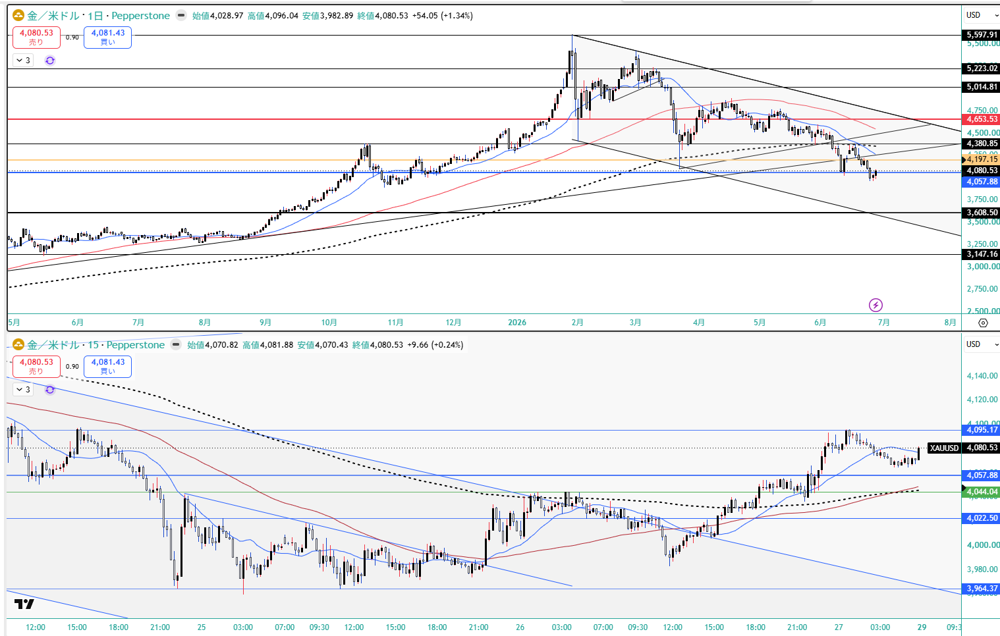
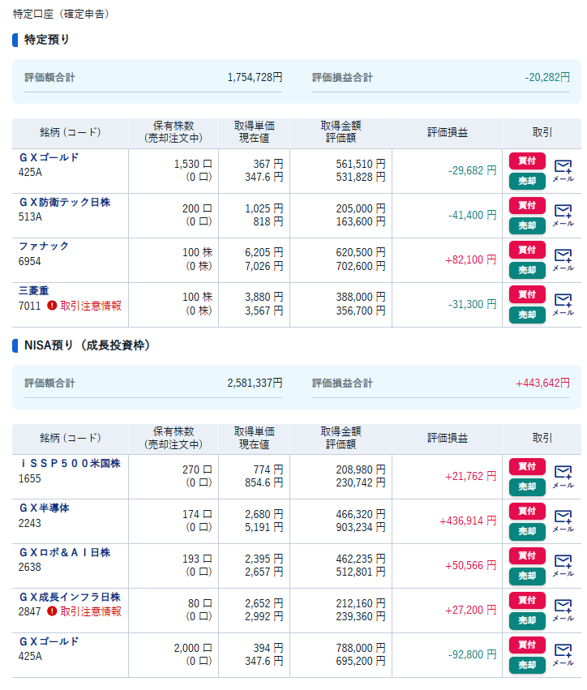

📉 CFD戦略ブリーフ — 6/29週
対象週: 2026-6-26_wk04（データ期間 2026-06-22→06-26 / snapshot 2026-06-27） ｜ ソース: wk04 review・meta・snapshot・boss市況(wr-2026-6-26)・--news・x_search
Regime: Equities Down（株安・利上げ警戒へ反転）
Add risk gate: 再閉鎖（VIX 18.41>18）
Reduce: caution（VIX定着/介入/28,957割れ/イラン拡大で発火）
機械=Equities Down / boss 1次=「レンジ・戻り売り中心、日本株半導体と金は押し目買い」→ 方向整合・両論併記（gold=off vs 大底圏買い）
1. 8ペア 30日スナップショット
| 銘柄 | 最新 | 30日% | wk03→wk04 |
|---|
| US100 | 29,118.2 | -3.66% | -4.2%(株安・equities down) |
| USD/JPY | 161.805 | +1.40% | +0.516(162レンジ・介入警戒) |
| US2Y | 4.225 | +1.56% | +0.012(利上げ警戒) |
| US10Y | 4.451 | -0.09% | -0.036(yields=rising判定/4.6%上限重い) |
| XAU/USD | 4,078.7 | -9.35% | -94.2(gold=off/大底圏買い) |
| BTC/USD | 59,721.7 | -18.79% | -3,174.8(下落相場) |
| WTI | 69.230 | -22.13% | -7.31(slump/イラン反発) |
| VIX | 18.410 | +16.96% | +2.01(18超え/gate再閉鎖) |
JP225: 金曜終値の実測なし（snapshot8ペア外・boss市況も数値明示なし＝創作回避）。boss評価：米株より明確に強い（PER 3月約21倍→18倍・カップウィズハンドル・72,600超えからの上昇期待）
8ペア30日 正規化プロット

2. レジーム & ゲート状況
機械レジーム
Equities Down
equities=down / vol=normal / oil=slump / gold=off / crypto=weak / yields=rising
⚠️ yields=rising は2Y主導の丸め。実態はベアフラットニング（2s10s +27.4→+22.6bp・US2Y↑/US10Y↓）＝債券が「利上げ→景気悪化」を織り込み始め
Add risk ゲート
再閉鎖
VIX 18.41 > 18（wk03 16.4で再開→再び閉）。株安・利上げ警戒・イラン再エスカでボラ復元。18近傍の際どい水準で終値定着を確認
Reduce risk ゲート
caution
VIX 18超え定着 / ドル円162台で実弾介入・レートチェック / NAS100 28,957割れ→28,600 / 米イラン交戦の拡大（覚書履行危機）で発火
3. シナリオ（3分岐）
A. レンジ・戻り売り中心（boss主筋）株は上値追わず・日本株半導体と金は押し目買い・BTC売り
B. ドル円162介入フラッシュ協議報道→実弾介入/レートチェック→深夜帯の円高カスケード
C. 米イラン再エスカ拡大覚書履行危機→原油・金上振れ・リスクオフ加速
三重逆風（PCE4.1%＋グールズビー・タカ派の利上げ警戒／Mag7メモリ転嫁株安／米イラン再エスカ）でリスクオン回帰が反転。マグ7は当面買わず・メモリ/半導体は追わず押し目待ち。日本株（PER低下で割安）と金は相対優位の押し目買い。エッジのない上値追いをしない。
4. CFD 銘柄別アクションプラン
USD/JPY 162レンジ・介入警戒継続
160円後半〜162円台のレンジ、「上がったら売る」が基本。最大の注意点は為替介入・レートチェック＝片山・佐々木財務相とベッセント米財務長官の協議報道が出ると急落の恐れ。介入は経験則上「24:30以降に入ったことがない」ため円安は深夜帯になりやすい。
上=162.20-162.50上値メド ／ 下=161.55近辺は到達済み ／ トリガー: 協議報道・実弾介入・レートチェック。短期売り抜け前提でロングは慎重・サイズ管理。
非対称（残弾と協調）: IMF枠の協調弾あと1発（5/6が2回目、11月まで）＋6/23片山-ベッセント会談実施＝協調レートチェックの布石（1月は10営業日2,100pips）。「最後の協調弾が出たら155方向へ深く長い／出る前は161-162で踏まれる」。判定フラグ＝単独か協調か（NY連銀rate check確認）を毎朝チェック。
US100 (NAS100) 最も方向感読めず・やや下目線
日足はやや下目線。マグニフィセント7（NVIDIA/テスラ/メタ/Amazon/MS/Apple）はメモリ価格転嫁懸念でほぼ全面安、メモリ関連株（マイクロン等）は逆行高。マグ7は当面買わず・メモリ/半導体は追わず押し目待ち。
下=28,957割れ→28,600（レンジ下抜け想定） ／ 上=29,626超えからフィボ0.5までの限定上昇のみ逆張り ／ 指数一括ロングではなく強弱分離（X市況も同旨）。
JP225 (日経) 米株より明確に強い・押し目買い
米国株より明確に強い。PERが3月の約21倍→18倍へ低下し割安感。米株下落のヘッジとしてメモリ・MLCC（村田製作所・太陽誘電）や半導体（東京エレクトロン・アドバンテスト・ディスコ・SCREEN・レーザーテック）を押し目買い。カップ・ウィズ・ハンドルで上目線。
上=72,600超えからの上昇期待 ／ 金曜要因で右側の売り圧力に一旦押される想定 ／ ※金曜終値の実測値はboss提供になし（創作回避）。円急騰時はNikkei/Nasdaq/BTC同時リスクオフ警戒。
Gold (XAU) 大底圏で押し目買い・6/25 1Lot追加
ビットコインとは切り離して強気。日足で2年前のサポートに迫る大底圏＝「ここからの売りは危険」、シルバーも大底圏。
CFD：wk03残1/4（=0.5Lot・建値$4,097）を建値で泳がせ＋6/25 21:36 $3,992で1Lotロング追加（15分足ディセンディングトライアングル上抜けの5m足確定）。
押し目買い=3,930反発→4,000（4H下落波フィボ0.382） ／ 当初TP=$4,200（オレンジ＝日足上昇トレンドライン裏）・SL=$3,960下抜け ／ 週末に4Hネック＋週足Fibo38.2（青$4,060）上抜けで週持越しへ（4H環境足で少しリスクを取った形）。日足終値$4,080.53(+1.34%)。
床更新・撤退ルール: distilled wk01の$4,250-4,300ソブリン床は6/24の$4,000割れ（テック換金売り＋debasement巻き戻しのトレンド清算）で無効化。現状の床は週足Fibo38.2 $4,060。$4,078持ち越しは$4,060のわずか$18上・SL$3,960まで$118の薄いクッション。終値で$4,060割れ＝持ち越し根拠崩壊で一旦撤退。$3,992は3,930ゾーン上方で既ロード、$3,930はより深い予備押し目。

BTC/USD 最も明快な売り継続
最も明快な「売り継続」相場。利上げ警戒に加え「中国のスーパーコンピュータによる暗号解読懸念」を弱気材料に。「上がったら売る」を繰り返す。金とは逆方向（金=買い／BTC=売り）に明確分離。独立妙味なし・監視中心。
下=56,869割れ→56,000ターゲット ／ X市況：株が上がっても下がってもBTCは下げる・AI株/金/現金/短期債に資金を奪われる（センチメント悪化も逆張り派は底打ち候補視）。
WTI 地政学反発 vs 供給回復の綱引き
イラン情勢悪化（ホルムズ海峡での貨物船攻撃・米軍のイラン施設爆撃／--news #1 #2）で反発局面も勢い弱く1/3戻し。
ただし供給回復ファンダが重し＝6/24夜にUAE輸出が戦前85%回復・イラン原油waiver発効・IMO安全保証でタンカー数百隻が再稼働＝フィジカルが想定より速く戻る。
下=68.89割れ→$66.235（チャート最終サポート）割れはCushing在庫の残存タイト（最低稼働水準割れ）が効くか次第 ／ 反発=74.68（5分足72.51超えから74.31） ／ 「地政学テクニカル反発 vs 実需戻りの構造的重し」の二要因で分解。
5. 週内タイムライン
- 6/29(月) 週明けギャップ注意。FRB高官発言（グールズビー/カシュカリ/ウィリアムズ）・PCE4.1%高止まりで利上げ警戒のギャップ要因。ドル円162介入警戒を最優先で監視。
- 週前半 戻り売り優位。NAS100 28,957割れ→28,600 vs 29,626超えで限定上昇。マグ7は当面買わず・メモリ株は逆行高。日本株（半導体/メモリ）と金は押し目買い。
- 週中盤 金は週足Fibo38.2（$4,060）維持が生命線。上抜け継続でTP$4,200（日足上昇トレンドライン裏）、割れ戻りなら越週ロングの撤退も。
- 週内随時 ドル円162介入監視＋米イラン交戦の行方。協議報道で深夜帯（24:30以降は経験則上なし）の円高フラッシュ。覚書履行危機で原油・金上振れ・リスクオフ加速。
6. 監視トリガー（毎朝チェック）
VIX 18超え 定着→ Add risk gate再閉鎖確定・Reduce発火（18割れ回帰で復元の綱引き）
2s10s 一段フラット化／逆イールド接近→ 景気後退織り込み＝リスク資産デュレーション直撃＋クレジット警戒
介入の単独/協調 判定（NY連銀 rate check）→ 協調弾なら155方向へ深く長い／出る前は161-162で踏まれる
ドル円162台で実弾介入/レートチェック（協議報道）→ 深夜帯の急激な円高フラッシュ
US100 28,957割れ → 28,600→ レンジ下抜け（29,626超えで限定上昇のみ逆張り）
米イラン交戦の拡大（覚書履行危機）→ 原油・金上振れ・リスクオフ加速（ただしWTIは供給回復が重し・$66.235がCush..在庫タイト次第）
Gold 週足Fibo38.2（$4,060）＝越週ポジ生命線→ 終値で$4,060割れなら一旦撤退（旧床$4,250-4,300は6/24無効化）。維持でTP$4,200/SL$3,960
BTC 56,869割れ → 56,000 ＋ 中国スパコン暗号解読懸念→ 売り継続・金とは逆方向
7. GMポートフォリオ（参考・2026-06-27）
国内株スナップショット（東証株）
※今週は数値サマリーの1次提供なし（スクリーンショットのみ）。残高・評価損益の詳細は上記画像参照。スタンス: 利上げ警戒・株安方向で長期コアは保有継続も、Mag7偏重の点検・現金比率の見直しを意識。日本株は割安感（PER 21→18）で相対優位、米株は当面買わず押し目待ち。
⚠️ 本資料は 2026-6-26_wk04 の確定データ（snapshot 2026-06-27 / review / meta / boss市況 wr-2026-6-26 / --news / x_search）に基づく整理であり、創作・ソース外情報は含まない。
機械レジーム=Equities Down（株安・利上げ警戒へ反転）と boss「レンジ・戻り売り中心、日本株半導体と金は押し目買い」は方向整合。gold=off（30日-9.35%）と boss=大底圏で押し目買いは「実測ラベル vs 前方視点」として併記。JP225は金曜終値の実測なし（snapshot8ペア外・boss市況も数値明示なし）。Gold CFDは6/25 $3,992で1Lotロング追加（15m DT上抜け確定）＋wk03残1/4（=0.5Lot・建値$4,097）を建値で泳がせ、週足Fibo38.2（$4,060）上抜けで週持越し（当週確定0件・TP$4,200/SL$3,960／boss 2026-06-27追加提供を反映）。X市況（hermes x_search）はboss・--newsと方向一致。ポートフォリオ数値は今週1次提供なし＝画像参照のみ。
投資助言ではなく GM運用の作戦整理。最終判断はミナト。 生成: ClaudeCode / 2026-06-27。